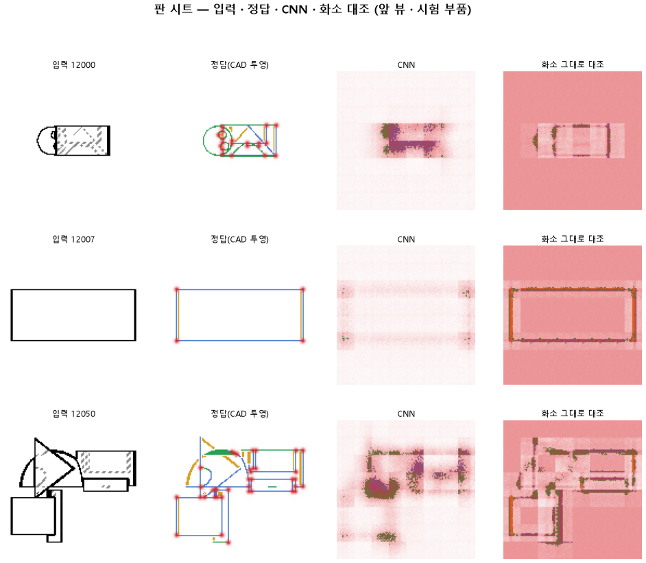

선 없는 곳을 칠하면 벌점을 더 줘서 선을 가늘게 그리게 한다
실패판정 기준
명제 130 과 같은 CNN 과 10 에폭에서 선 없는 화소 가중만 0.3 으로 올리면 헛선이 2 % 아래로 내려가고 곡선 · 직선은 0.90 · 곡면 테 0.70 · 꼭짓점 F1 0.75 를 넘으며, 화소 그대로 대조보다 곡선 +0.15 · 꼭짓점 F1 +0.20 낫다
| 지표 | 조건 | 이 판 | 대조 | 결과 |
|---|---|---|---|---|
| 선_곡선 | >= 0.9 | 0.218 | 0.783 | |
| 선_직선 | >= 0.9 | 0.276 | 0.467 | |
| 선_곡면테 | >= 0.7 | 0.002 | 0.234 | |
| 선_헛선 | <= 0.02 | 0.034 | 0.196 | |
| 점_F1 | >= 0.75 | 0.285 | 0.270 | |
| 선_곡선_차 | >= 0.15 | -0.172 | 0.027 | |
| 점_F1_차 | >= 0.2 | 0.235 | 0.221 |
기준은 돌리기 전에 커밋됐다(하네스 관문이 확인). 대조는 같은 에폭.
숫자: 이 판과 대조
| 지표 | 이 판 | 대조 | 차 |
|---|---|---|---|
| 시험loss | 1.648 | ||
| 학습loss | 1.700 | ||
| 선_직선 | 0.276 | 0.467 | -0.191 |
| 선_곡선 | 0.218 | 0.783 | -0.565 |
| 선_곡면테 | 0.002 | 0.234 | -0.233 |
| 선_숨음 | 0.854 | ||
| 선_헛선 | 0.034 | 0.196 | -0.163 |
| 점_정밀 | 0.192 | ||
| 점_재현 | 0.554 | ||
| 점_F1 | 0.285 | 0.270 | +0.015 |
| 선_직선_화소 | 0.186 | ||
| 선_곡선_화소 | 0.391 | ||
| 선_곡면테_화소 | 0.080 | ||
| 선_숨음_화소 | 0.733 | ||
| 선_헛선_화소 | 0.051 | ||
| 점_정밀_화소 | 0.026 | ||
| 점_재현_화소 | 0.700 | ||
| 점_F1_화소 | 0.050 | ||
| 선_곡선_차 | -0.172 | 0.027 | -0.199 |
| 선_직선_차 | 0.090 | ||
| 선_곡면테_차 | -0.078 | ||
| 점_F1_차 | 0.235 | 0.221 | +0.014 |
학습 곡선

점검
연기 판
첫 loss 5.197
배치 하나 40 걸음 뒤 2.102
VRAM 4.54 GB
층보기 (시험 64 부품 · 4 층)
칸끼리 닮음
빈 조각 주의 몫 (빈 조각 0.54)
주의 엔트로피
출력 자리 퍼짐 (정답 0.148)
탐침 (합성 그림)
블록 4 구조 6 종
블록 4 곡률 R²
블록 3 ·
쇼츠
웹용 영상 없음
편 92_판131빈가중 · 굽기 실패(코드 1): subprocess.CalledProcessError: Command '['G:/art2real/out/tts/chatterbox/Scripts/python.exe', 'G:\\art2real\\원화3d\\과정\\영상05\\tts\\굽기_chatterbox.py', 'G:/art2real/out/영상05/대화/92_판131빈가중/_cb일감.json']' r · 업로드 대기 · 하네스가 판 끝에 대본(claude -p) · 대본검사 · 맥락 없는 읽기 · 굽기까지
| 누구 | 말 |
|---|---|
| AI | 오른쪽이 모델이 그린 선인데, 둥근 테두리가 거의 없어요. |
| AI | 이 모델은 도면을 보고 모서리 선을 따라 그려요. |
| AI | 왼쪽이 정답이에요. |
| AI | 이번엔 없는 데 그린 선, 헛선을 줄이려고 학습을 바꿨어요. |
| AI | 선 없는 데 그리면 더 크게 틀린 걸로 쳤어요. |
| 나 | 도면에 곡선이 흐리게 들어가서 못 본 거겠지. |
| AI | 모델에 넣은 도면이에요. 둥근 테두리가 또렷하게 있어요. |
| AI | 바꾸기 전 모델은 이 도면에서 곡선을 거의 다 찾았어요. |
| 나 | 그럼 도면 탓이 아니네. |
| 나 | 바꾸기 전 모델이랑 같은 도면에 돌려. 곡선 몇 개 찾는지 세어 봐. [같이 돌려] |
| AI | 정답 곡선을 찾은 몫과 헛선 비율을 쟀어요. |
| AI | 앞이 바꾸기 전이에요. |
| AI | 곡선 0.783→0.218, 헛선 0.196→0.034예요. [곡선 0.218] |
| AI | 헛선은 줄었는데 진짜 곡선도 같이 사라졌어요. |
| 나 | 헛선 지우려다 진짜 선까지 지웠네. |
| AI | 이번 학습은 실패예요. [이번 학습 실패] |
해석
아직 비어 있음. 보고.md 의 이 칸을 채우면 다시 만들 때 들어온다
다음 가지
아직 비어 있음. 보고.md 의 이 칸을 채우면 다시 만들 때 들어온다
재현
python 하네스/하네스.py --config-name 판_131빈가중
설정.yaml · 판정.json · 보고.md · 산출 G:/art2real/out/하네스/131빈가중/